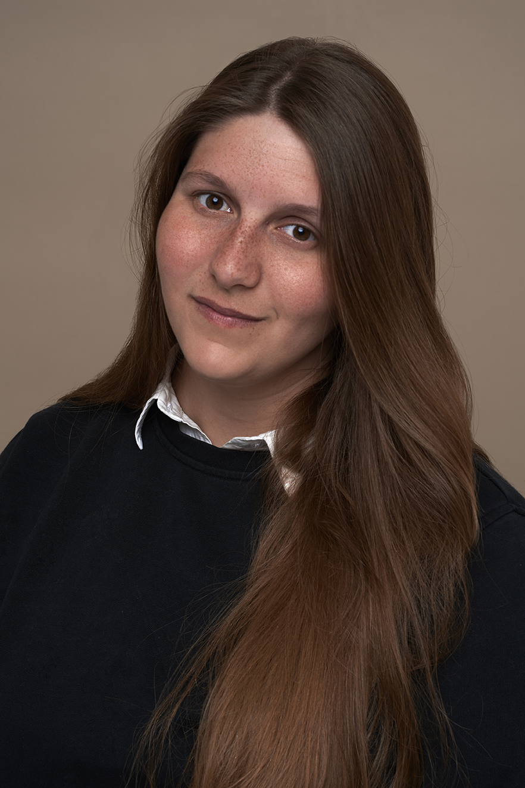
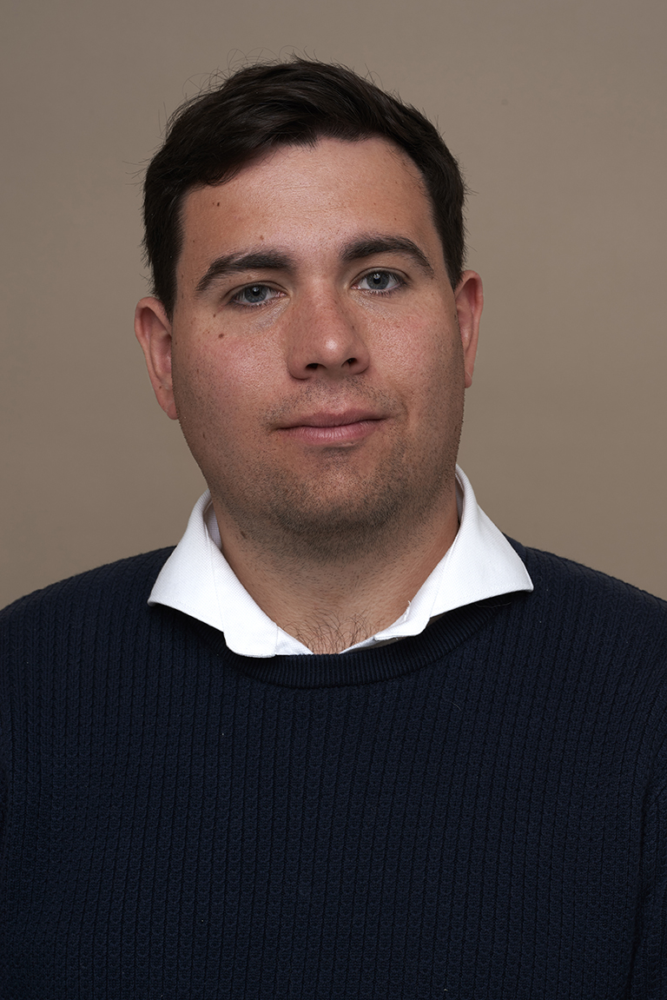

Meet Jasmijn & Tom
We are Studio Taupe — a creative duo based in Deventer, the Netherlands, blending calm, refined photography with technical expertise and digital innovation.

I'm Jasmijn
Photographer & Creative Director
I'm Jasmijn — a photographer and creative director based in Deventer, the Netherlands, creating calm and refined imagery for fashion, beauty and lifestyle brands.

Meet Tom
Developer & Production Manager
Back on April 3rd, 2013, I already tried to build something. I was just 15 years old at the time, full of ideas but without the knowledge to finish it.